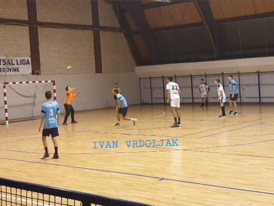
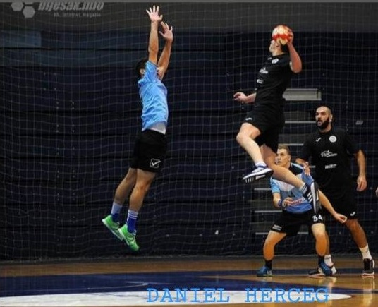
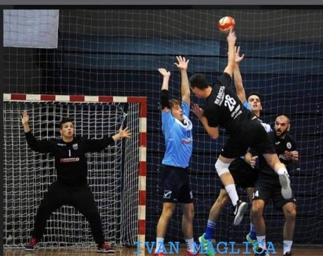

Osvrt na polusezonu
Nakon što su seniori završili jesenski dio lige, napravili smo statistiku.
tri najbolja strijelca našeg kluba:
Ivan Vrdoljak - 37

Daniel Herceg - 27

Ivan Maglica - 15

Naš igrač a ujedno i trener mlađih kadeta i cicibana, na poziciji srednjeg vanjskog postigao je
u 5 utakmica 37 golova. Ivan je u svojoj karijeri do sada igrao pet godina u RK Livno, te jednu
godinu u RK Krilnik Split. Nakon završenog kineziološkog fakulteta, posvetio se rukometu u
RK Rvacka te već skoro godinu dana uspješno vodi mlađe ekipe, a sada kao trener, igrač i kapetan
uz trenera Marka Mihaljevića vodi seniorsku ekipu.
Drugi na listi strijelaca nalazi se Daniel, koji u 5 utakmica na poziciji desnog
vanjskog postigao 27 golova. Danijel je kroz osnovnu i srednju školu trenirao rukomet sedam
godina u RK Livno. Završio je srednju školu, a uz posao, ponovno se aktivno počeo baviti i
rukometom.
Ivan Maglica je u 6 utakmica postigao 15 golova, na poziciji lijevog vanjskog. Ivan je
također kroz osnovnu i srednju školu trenirao šest godina rukomet u RK Livno, te nakon srednje
škole, zaposlio i ponovno aktivno počeo baviti rukometom.
Naši dečki naravno nebi stigli do ovih brojki, bez timskog rada i bez ostatka ekipe,
koji su svojim asistencijama, izborenim sedmercima i izvedenim akcijama uvelike pripomogli u
postignutim golovima.
Ekipa se pomalo gradi, timski rad i volja su tu, tako da ne sumnjamo da će cijela ekipa u
budućnosti biti na još većoj razini!